This work is licensed under a Creative Commons Attribution-ShareAlike 4.0 International License
using CovidSEIR, Plots, DataFrames, JLD2, StatsPlots, Dates
Plots.pyplot()
jmddir = normpath(joinpath(dirname(Base.find_package("CovidSEIR")),"..","docs","jmd"))
covdf = covidjhudata()
describe(covdf)
11×8 DataFrame. Omitted printing of 2 columns
│ Row │ variable │ mean │ min │ median │ max │ nuni
que │
│ │ Symbol │ Union… │ Any │ Union… │ Any │ Unio
n… │
├─────┼───────────┼───────────┼─────────────┼───────────┼────────────┼─────
────┤
│ 1 │ Date │ │ 2020-01-22 │ │ 2020-03-30 │ 69
│
│ 2 │ confirmed │ 556.139 │ 0 │ 0.0 │ 161807 │
│
│ 3 │ Province │ │ Alberta │ │ Zhejiang │ 79
│
│ 4 │ Country │ │ Afghanistan │ │ Zimbabwe │ 178
│
│ 5 │ Lat │ 21.8808 │ -41.4545 │ 23.7649 │ 71.7069 │
│
│ 6 │ Long │ 23.273 │ -135.0 │ 20.9727 │ 178.065 │
│
│ 7 │ deaths │ 22.3605 │ 0 │ 0.0 │ 11591 │
│
│ 8 │ recovered │ 175.706 │ 0 │ 0.0 │ 62889 │
│
│ 9 │ iso2c │ │ AD │ │ ZW │ 172
│
│ 10 │ cpop │ 2.2813e8 │ 33785.0 │ 2.49924e7 │ 1.39273e9 │
│
│ 11 │ ppop │ 2.74801e7 │ 41078 │ 1.557e7 │ 111690000 │
│
United States¶
us = CountryData(covdf, "US")
CountryData{Float64,Int64}(3.2716743e8, [1, 2, 3, 4, 5, 6, 7, 8, 9, 10 …
60, 61, 62, 63, 64, 65, 66, 67, 68, 69], [0.0, 0.0, 0.0, 0.0, 0.0, 0.0, 0.0
, 0.0, 0.0, 0.0 … 307.0, 417.0, 557.0, 706.0, 942.0, 1209.0, 1581.0, 2026
.0, 2467.0, 2978.0], [0.0, 0.0, 0.0, 0.0, 0.0, 0.0, 0.0, 0.0, 0.0, 0.0 …
176.0, 178.0, 178.0, 348.0, 361.0, 681.0, 869.0, 1072.0, 2665.0, 5644.0], [
1.0, 1.0, 2.0, 2.0, 5.0, 5.0, 5.0, 5.0, 5.0, 7.0 … 25006.0, 32681.0, 4311
2.0, 52686.0, 64475.0, 81946.0, 99207.0, 118380.0, 135754.0, 153185.0])
using Turing
mdl = countrymodel(us)
cc = Turing.psample(mdl, NUTS(0.65), 10000, 4)
import JLD2
JLD2.@save "$jmddir/us_$(Dates.today()).jld2" cc
JLD2.@load "$jmddir/us_2020-03-30.jld2" cc;
Estimates¶
plot(cc)

describe(cc)
2-element Array{ChainDataFrame,1}
Summary Statistics
parameters mean std naive_se mcse ess r_hat
────────── ───────── ───────── ──────── ─────── ──────── ──────
a 0.3965 0.2540 0.0013 0.0112 175.7137 1.1405
pE0 0.0000 0.0000 0.0000 0.0000 144.5783 2.6079
p[1] 0.1768 0.2344 0.0012 0.0114 144.5783 1.6726
p[2] 0.0060 0.0066 0.0000 0.0003 144.5783 1.2275
sigC 1889.1896 1355.4471 7.1438 70.8943 144.5783 7.2035
sigD 13.3932 2.4814 0.0131 0.1193 144.5783 2.0937
sigRc 132.9302 11.9222 0.0628 0.4368 371.9244 1.0492
β[1] 0.8117 0.5785 0.0030 0.0270 148.9099 1.2142
β[2] 0.9877 0.6280 0.0033 0.0241 280.0769 1.0252
γ[1] 0.1703 0.2322 0.0012 0.0106 145.6140 1.3043
γ[2] 0.0024 0.0031 0.0000 0.0001 147.6234 1.1222
τ 0.3691 0.8900 0.0047 0.0372 145.8685 1.3798
Quantiles
parameters 2.5% 25.0% 50.0% 75.0% 97.5%
────────── ──────── ──────── ───────── ───────── ─────────
a 0.0772 0.1587 0.3600 0.5841 0.9249
pE0 0.0000 0.0000 0.0000 0.0000 0.0000
p[1] 0.0000 0.0002 0.0078 0.3352 0.7536
p[2] 0.0038 0.0038 0.0041 0.0049 0.0276
sigC 472.9798 545.6422 1575.4042 3211.1451 3719.8838
sigD 9.6155 11.1926 13.2194 15.3977 18.1240
sigRc 110.7265 124.8205 132.4539 140.7174 157.2685
β[1] 0.0557 0.4490 0.6539 1.0790 2.2353
β[2] 0.0813 0.5084 0.8815 1.3578 2.4565
γ[1] 0.0006 0.0072 0.0534 0.2926 0.7821
γ[2] 0.0001 0.0012 0.0022 0.0027 0.0090
τ 0.0000 0.0000 0.0001 0.0973 3.2673
Fit¶
sdf = simtrajectories(cc, us, 1:150)
f = plotvars(sdf, us)
plot(f.fit, ylim=(0, maximum(us.active)*1.3))

Implications¶
for fig in f.trajectories
display(plot(fig))
end
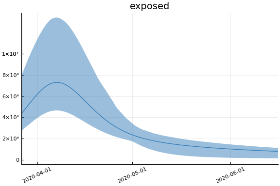 

 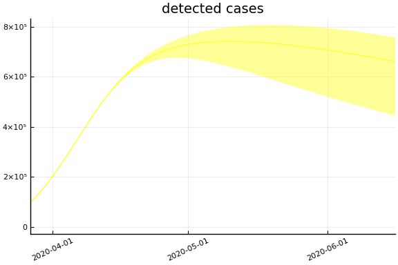
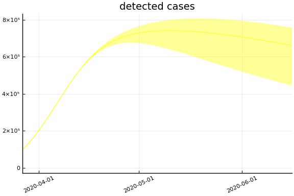

 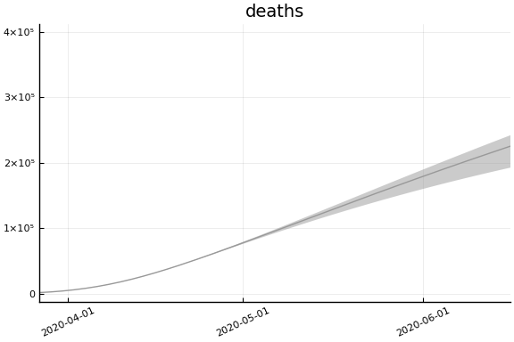
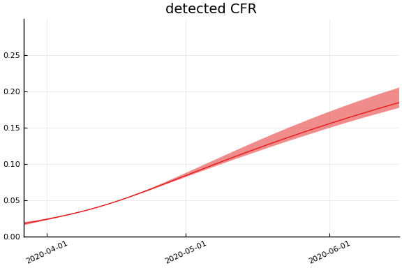
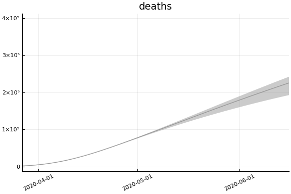
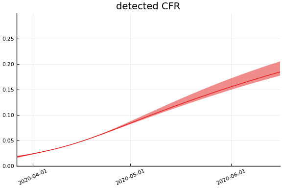  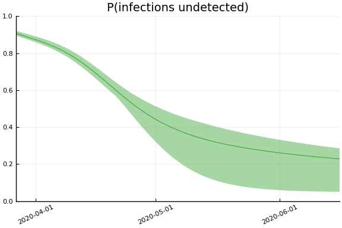 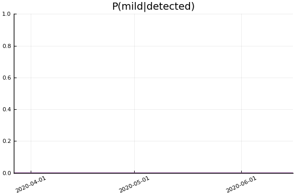
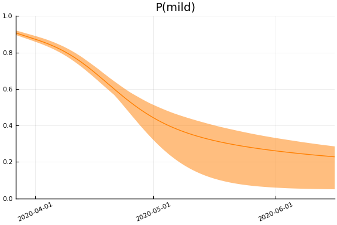
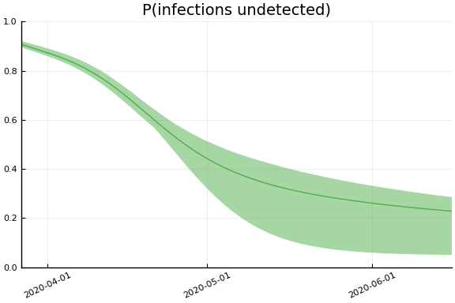 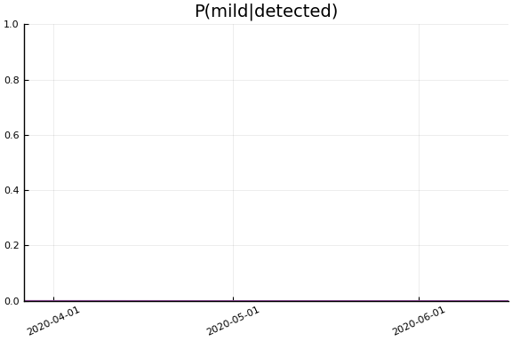
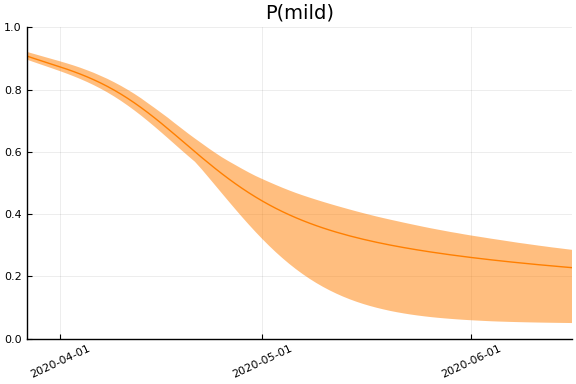